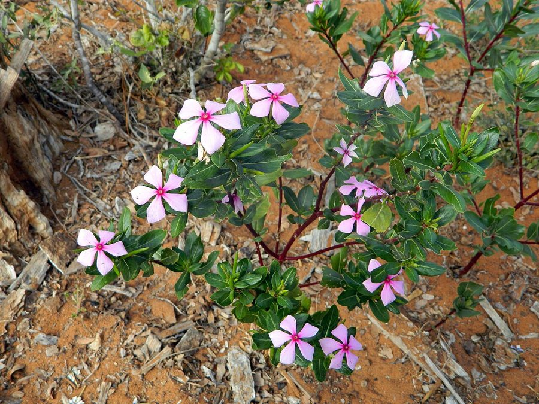

सदाबहारSadabahar
Catharanthus roseus · Apocynaceae · FLR-0183

- Scientific name
- Catharanthus roseus (L.) G.Don
- Family
- Apocynaceae
- Hindi
- सदाबहार
- Local names
- sadabahar, sada bahar, barmasi, barahmasi, nayantara
- Status here
- naturalized
- Movement
- Resident, here all year
- IUCN
- not evaluated
- Review
- audited and independently read
When to look कब देखें
Present all year.
Uses and possibilities उपयोग और संभावनाएँ
“Traditional medicine” means a documented traditional use, not a claim that it works. Nothing on this page is medical advice.
Drawn from the documented uses in the profile below, where each is labelled traditional, current or a research lead. All uses →
सदाबहार / Sadabahar
Catharanthus roseus (L.) G.Don — Apocynaceae
सदाबहार — मेडागास्कर की एक छोटी झाड़ी, गुलाबी या सफ़ेद फूलों वाली, जो अब हर दूसरे घर के बगीचे में लगी है — "सदा बहार" यानी "हमेशा खिलता है"। भारत में यह 1700 के दशक में आई। आयुर्वेद में उच्च रक्तचाप और मधुमेह की दवा के रूप में जानी जाती है। लेकिन बहुत ज़हरीली है। 1950 के दशक में वैज्ञानिकों ने इससे दो क्षार निकाले — विनक्रिस्टाइन और विनब्लास्टाइन — जो बचपन के कैंसर की दवा बन गईं और हज़ारों बच्चों की जान बचाई। पर घर में इसका उपयोग घातक हो सकता है।
Quick Identification त्वरित पहचान
| Feature | Description |
|---|---|
| Habit | Herbaceous annual or short-lived perennial shrub, 30–60 cm, erect or sprawling, much-branched |
| Stem | Herbaceous, green, hairy, sometimes with a reddish tinge at nodes |
| Leaves | Opposite, oval to obovate, 2–5 cm, entire, glabrous above, slightly hairy below; bright green |
| Flowers | Pale pink, magenta, red or white; 5-petalled, salverform (tube with flat face), with a darker eye in the centre; 1–2 cm across |
| Fruit | A pair of slender follicles (seed pods), 2–4 cm long, reddish-green, containing many small seeds |
| The key feature | Distinctive 5-petalled flowers with a central contrasting "eye", flat-faced |
Field tip: A sprawling or erect herbaceous shrub with opposite oval leaves and flat, 5-petalled flowers (pink, red or white) with a dark centre. Common in gardens and on disturbed ground. The flowers appear continuously if watered. Do not ingest any part.
हिंदी — कैसे पहचानें: झाड़ी, 30-60 सेमी, आमने-सामने पत्तियाँ, 5 पंखुड़ियों वाले फूल, गुलाबी या सफ़ेद, बीच में गहरा निशान। साल भर फूल खिलते हैं।
Morphology आकारिकी
Biometrics (cultivated and naturalized populations):
| Measurement | Range |
|---|---|
| Height | 30–60 cm |
| Leaf length | 2–5 cm |
| Leaf width | 1–2 cm |
| Flower diameter | 1–2 cm |
| Follicle length | 2–4 cm |
Stem: Herbaceous, green becoming reddish at nodes with age, minutely hairy, terete.
Leaves: Opposite, simple, oval to obovate, acute or acuminate, entire, glabrous or sparsely hairy, with a prominent midrib and 3–4 pairs of lateral veins. Leaves contain multiple indole alkaloids including vincristine, vinblastine and vinorelbine.
Flowers: Bisexual, actinomorphic, 5-merous. Corolla salverform (narrow tube expanding abruptly to a flat face), pale pink, magenta, red or white; the throat is often a darker colour than the lobes, forming a prominent "eye". The flowers are scented. Flowering March–October in warm climates.
Fruit: Follicles appear in pairs, slender, 2–4 cm long, initially green with a reddish tinge, dehiscing when mature to release numerous small dark seeds.
हिंदी: पत्तियाँ आमने-सामने, अंडाकार, चमकदार हरी। फूल 5 पंखुड़ियों वाले, गुलाबी-लाल-सफ़ेद, बीच का रंग गहरा। फल पतली कलियाँ, बीजों से भरी। सभी भाग विषैले क्षार से भरे हैं।
Behaviour & Ecology व्यवहार और पारिस्थितिकता
A pioneer of disturbed ground throughout tropical and warm temperate regions. It germinates readily in waste ground, field margins, dumpsites and other open areas. The plant is self-compatible and prolific in seeding — a single plant can produce thousands of seeds per season. In eastern UP, it is common as an ornamental in gardens and has become naturalized in disturbed habitats.
The flowers are visited by small bees, butterflies and moths. The leaves are unpalatable to herbivores due to their alkaloid content; cattle and goats avoid it. Some insects (notably the aphid Aphis craccivora) feed on it; predatory insects and parasitoid wasps are attracted.
The species is shade-intolerant and does not persist in dense vegetation.
हिंदी: साल भर गर्म जगह में खिलता है। गंदी, उजाड़ जमीन पर उगता है। एक पौधा हज़ारों बीज देता है। कीड़े-मकोड़े का शिकार नहीं करते क्योंकि जहरीला है।
Life Cycle / Phenology जीवन चक्र
| Month / season | Event |
|---|---|
| January–March | Germination and early growth (if water available); first flowering begins |
| March–October | Flowering and fruiting; continuous in warm water |
| May–June | Peak growth following monsoon onset |
| August–October | Seed set and fruit maturation |
| November–February | Senescence in cold regions; minimal growth |
| Year-round | In truly tropical climates, can flower and set seed throughout |
Reproduces by seed. Annual or short-lived perennial depending on climate and conditions.
हिंदी: जनवरी-मार्च में शुरुआत, मार्च-अक्टूबर में फूल और बीज, सर्दी में धीमा।
Associated Species / Interactions संबंधित प्रजातियाँ
- Garden companions: Often grown with marigold, zinnia, petunia as an ornamental bedding plant
- Field companions: parthenium, Lantana, other weeds of disturbed ground
- Fauna: Small bees, butterflies, parasitoid wasps; avoided by herbivores due to toxicity
Pests and Diseases कीट और रोग
- Leaf-feeding insects: Aphis craccivora (cowpea aphid) and other aphids
- Leaf spots: fungal diseases in wet conditions, not serious
- No major pests; the plant's toxicity is self-protective
Agricultural / Human Relevance कृषि प्रासंगिकता
CAUTION: Toxicity statement. Catharanthus roseus is acutely toxic in all parts. The plant contains over 130 different indole alkaloids; the most notable are vincristine and vinblastine, which cause neurotoxic and gastrointestinal poisoning. Ingestion causes severe poisoning: vomiting, abdominal pain, diarrhoea, numbness, tremors, paralysis, and potentially death. Skin contact may cause dermatitis. The plant is not for home use of any kind.
Documented traditional use (not a recommendation): In classical Indian medicine (Ayurveda and Unani), the leaves and roots were documented in historical texts for treating high blood sugar (what we would now call diabetes), hypertension and inflammation. Early modern Ayurvedic practitioners used it for "blood purification". However, traditional texts do not suggest internal ingestion was safe or effective — the plant's reputation was cautious at best.
Drug history — Vincristine and Vinblastine: In the 1950s, Eli Lilly researchers in the United States isolated two alkaloids from Catharanthus roseus: vincristine and vinblastine. When tested against cancer cells in the laboratory, both alkaloids showed remarkable activity against childhood acute lymphoblastic leukemia (ALL). Clinical trials began in the late 1950s. By 1962, vincristine (Oncovin) and vinblastine (Velban) had become FDA-approved cancer drugs. The result was revolutionary: childhood leukemia mortality dropped from near 100% in 1950 to survival rates above 80% by the 1980s — among the greatest medical achievements of the 20th century. Over 300,000 children's lives have been saved globally by these two drugs extracted from this single plant species.
In the 1960s–1970s, Madagascar's natural Catharanthus forests were nearly depleted by commercial harvesting. Today, vincristine and vinblastine are synthesized pharmaceutically (though the plant remains a source in some countries). The synthetic compounds are identical to the natural alkaloids.
Today: The plant is widely cultivated as an ornamental (called "impatiens" or "vinca" in English gardens). In India, it is a common garden shrub and has naturalized in disturbed areas. It is not used in traditional medicine in modern practice due to toxicity and legal restrictions.
Research direction (a lead, not a result). The ecology of Catharanthus populations in Madagascar and their role in supporting insect diversity is an active research area. The biogeography of alkaloid-rich plants in the Apocynaceae and their natural enemies is also being studied.
हिंदी — सावधानी: सभी भाग जहरीले हैं। निगलने से गंभीर ज़हर: उल्टी, पेट दर्द, लकवा, मृत्यु। घर पर इस्तेमाल बिल्कुल नहीं करना।
दवा का इतिहास: 1950 के दशक में विंक्रिस्टाइन और विनब्लास्टाइन अलग किए गए। बचपन के कैंसर (ALL) की पहली कारगर दवाई बन गईं। 1950 में 100% मृत्यु दर से 1980 में 80% बचाव दर हो गई। 3 लाख बच्चों की जान बचाई। आज सिंथेटिक रूप से बनाई जाती हैं, पर पौधा अभी भी स्रोत है।
Expected Locally स्थानीय रूप से अपेक्षित
Not a field record. Written from published accounts for eastern Uttar Pradesh. No confirmed local sighting yet — if you have seen it, that is what the atlas needs.
अभी तक स्थानीय पुष्टि नहीं। यह विवरण प्रकाशित स्रोतों से है, किसी अवलोकन से नहीं।
To be expected in gardens, roadsides, disturbed ground and wasteland throughout eastern UP where it has been cultivated as an ornamental and has naturalized. The plant flowers from March to October and is most visible during the monsoon and post-monsoon months. A photograph with date and location is a confirmed record.
Distribution वितरण
Global range: Native to Madagascar; now cultivated and naturalized throughout tropical and warm temperate regions worldwide.
In India: Introduced in the 18th century; now widespread across all states, from sea level to 2,000 m, in gardens and disturbed habitats.
In Uttar Pradesh: Very common as an ornamental in gardens and as a naturalized weed in disturbed areas throughout the state.
In Basti district / eastern UP: Expected in gardens and on roadsides; likely abundant and easily found.
Research Questions शोध प्रश्न
Anyone can investigate these | कोई भी इन प्रश्नों की जाँच कर सकता है
- How long does a single flower remain open, and how many are produced per plant per week? / एक फूल कितनी देर खिला रहता है? — Observe a marked plant.
- What insects visit the flowers, and which are pollinators? — Watch and sketch visitors; note pollen transfer.
- How many seeds does a single fruit pod produce, and what is the germination rate? — Collect pods and count; grow seeds.
- Is Catharanthus becoming more or less abundant on roadsides and wastelands over time? / क्या सदाबहार उजाड़ जमीन पर बढ़ रहा है या घट रहा है? — Compare two areas over a year.
- Do cattle or goats eat it, or do they avoid it? — Ask farmers; observe livestock behaviour.
Similar Species मिलती-जुलती प्रजातियाँ
| Species | How to tell apart | हिंदी |
|---|---|---|
| Sarpagandha (Rauvolfia serpentina) | Forest understory; lanceolate leaves opposite or in threes; glossy; forest habitat | वन की झाड़ी, पत्तियाँ लंबी |
| periwinkle pink (other Vinca species) | Now reclassified as Catharanthus, very similar; pale pink flowers | गुलाबी फूल |
| zinnia | Brightly coloured, many-petalled; different leaf arrangement; different flowers | चमकीले, कई पंखुड़ियाँ |
Field rule: Herbaceous sprawling shrub, opposite oval leaves, 5-petalled flat-faced flowers with a contrasting dark eye, prolific fruiting on wasteground — sadabahar. Do not eat.
Taxonomy & Classification वर्गीकरण
Original description. Originally described as Vinca rosea by Linnaeus (1759). Transferred to Catharanthus by George Don (1837) when it was recognised as distinct from the European periwinkle genus Vinca.
Subspecies. Monotypic — no subspecies are recognised.
Family and order placement. Apocynaceae (dogbane family), order Gentianales. The family is diverse and alkaloid-rich, including oleander, periwinkle and many others.
Phylogenetic notes. Molecular studies place Catharanthus as a monophyletic genus within Apocynaceae, closely related to Tabernaemontana and other African genera. The genus contains approximately 8 species, all native to Madagascar, but C. roseus is the only widely distributed and cultivated species.
IUCN status rationale. Not evaluated. The species is extremely abundant and expanding globally; no conservation concerns.
Photo Gallery फोटो गैलरी
Photos needed आवश्यक फोटो
- [ ] Flowering plant in garden (बगीचे में फूलों वाला पौधा)
- [ ] Flower with contrasting eye (फूल - बीच में गहरा रंग)
- [ ] Fruit pods developing (बीज की कलियाँ)
- [ ] Naturalized on roadside or wasteland (उजाड़ जमीन पर)
No photos yet — add field photos to media/species/sadabahar/ and run node scripts/sync_photos.js.
References संदर्भ
- Linnaeus, C. (1759). Systema Naturae, 10th ed., vol. 2. Stockholm. [original description, as Vinca rosea]
- Don, G. (1837). General History of the Dichlamydeous Plants, vol. 4. London. [transfer to Catharanthus]
- Kirtikar, K.R. & Basu, B.D. (1935). Indian Medicinal Plants, 2nd ed., vol. 3. Lalit Mohan Basu, Allahabad.
- Johnson, I.S., Armstrong, J.G., Gorman, M. & Burnett, J.P. (1963). The vinca alkaloids: a new class of oncolytic agents. Cancer Research 23(8): 1390–1427.
- Newman, D.J. & Cragg, G.M. (2016). Natural products as sources of new drugs from 1981 to 2014. Journal of Natural Products 79(3): 629–661.
- Council of Scientific and Industrial Research (1950). The Wealth of India: Raw Materials, vol. 2 (C). CSIR, New Delhi. (Catharanthus, as Lochnera rosea)
- GBIF Occurrence Data — Catharanthus roseus, India (2026).
Source file: species/flora/medicinal/sadabahar.md